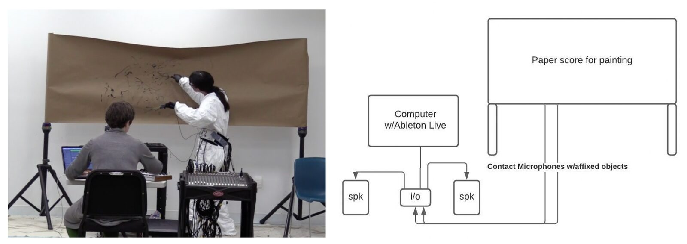
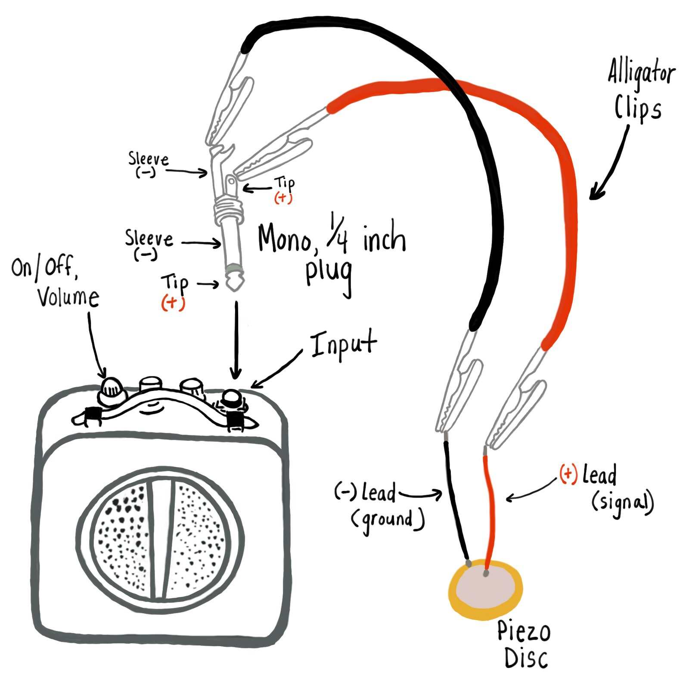
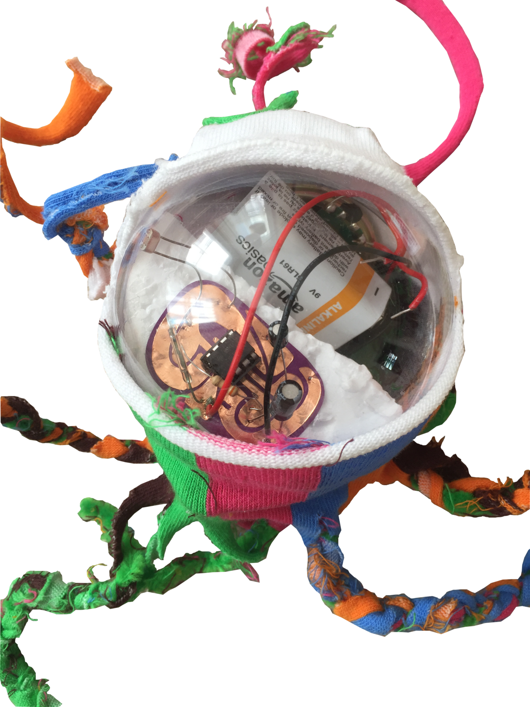
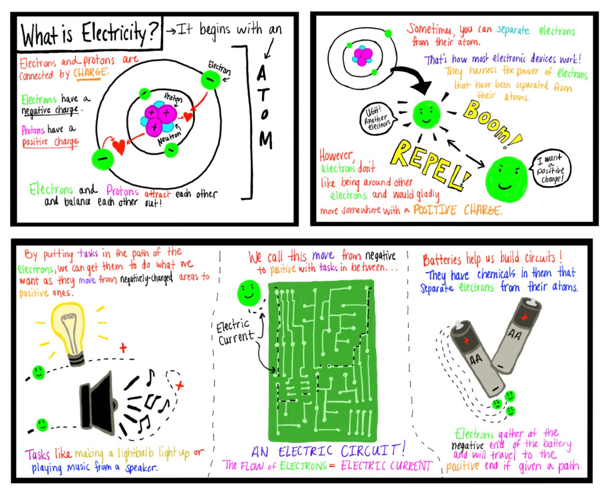
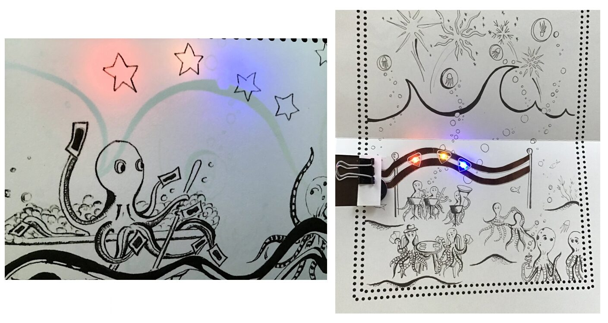
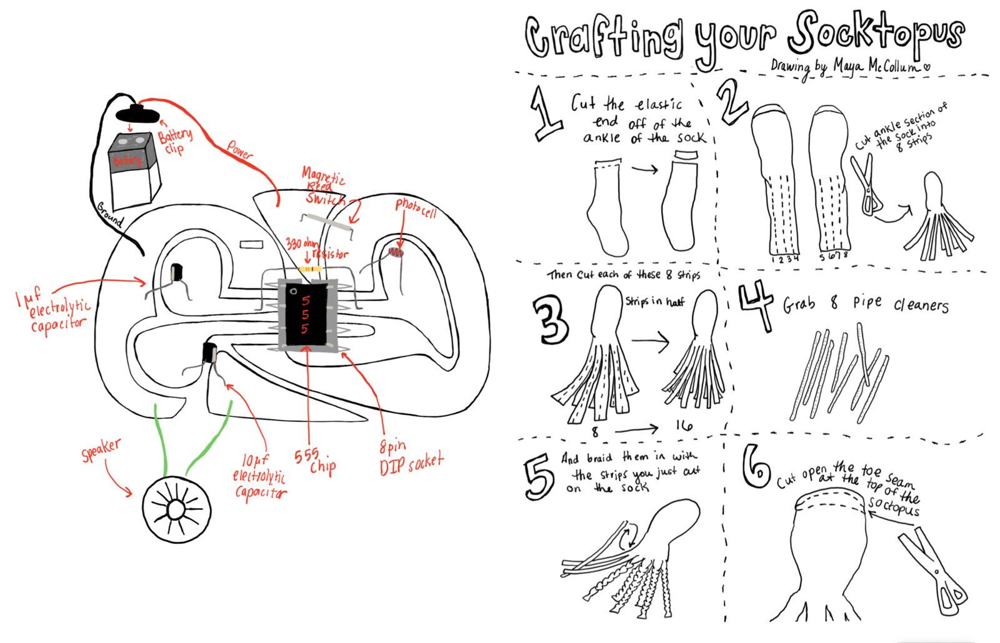
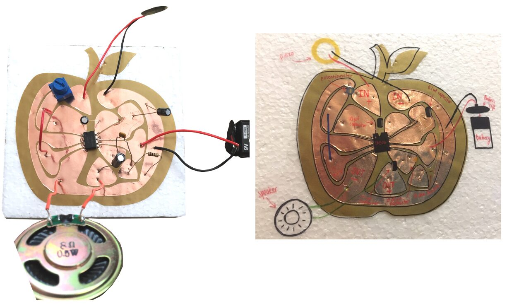
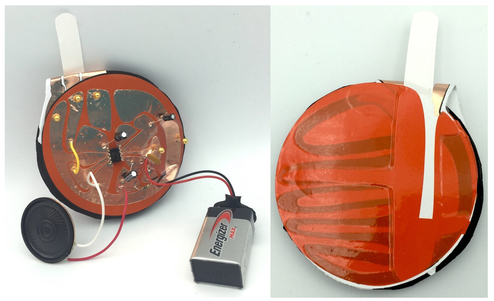
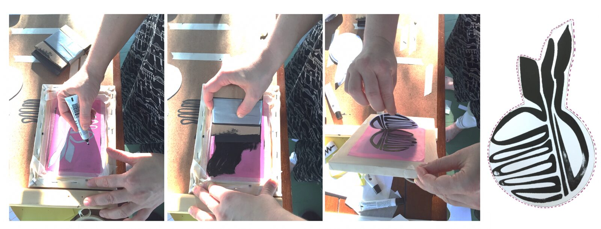
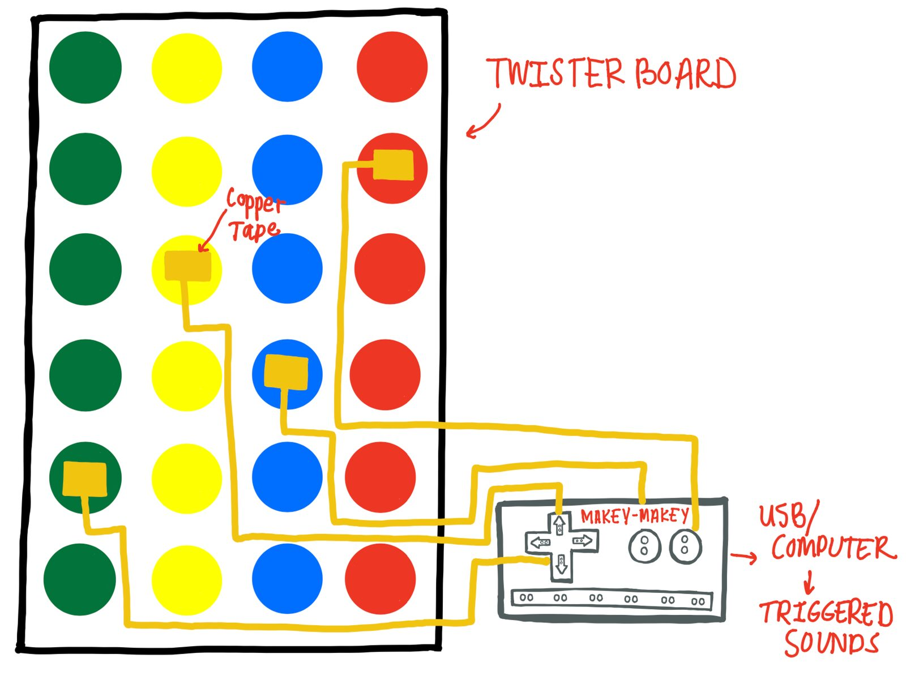

Changing GEAR: The Girls Electronic Arts Retreat's Teaching Interfaces for Musical Expression
Abstract
The Girls Electronic Arts Retreat (GEAR) is a STEAM summer camp for ages 8 - 11. In this paper, we compare and contrast lessons from the first two iterations of GEAR, including one in-person and one remote session. We introduce our Teaching Interfaces for Musical Expression (TIME) framework and use our analyses to compose a list of best practices in TIME development and implementation.
Author Keywords
NIME, STEAM, education, DEI, e-textiles, craft
CCS Concepts
Applied computing → Arts and humanities → Sound and music computing; Applied computing → Education
Introduction
The Girls Electronic Arts Retreat (GEAR) [1] is a summer camp for 8 - 11 year old girls with any level of technical or creative background. Hosted by the Technology in Music and Related Arts Department of Oberlin Conservatory [2] in partnership with Oberlin Center for the Arts [3], GEAR uses sonic arts and crafts to foster curiosity in science, technology, engineering, arts, and math (STEAM). In this paper, we use GEAR projects to introduce Teaching Interfaces for Musical Expression, or TIMEs. TIMEs are NIMEs made for teaching. However, TIMEs differ from the extensive tradition of educational Digital Musical Interfaces (DMIs) within the NIME community in their pedagogical goals, design, and classroom implementation. Many educational DMIs are designed and built by researchers to aid in music education [4]. In contrast, TIMEs are designed not only for participant interaction but to be built by participants themselves to support STEAM learning objectives. This distinction impacts design decisions, build processes, and material choices, and therefore merits its own analytical framework.
In this paper, we use autoethnographic reflection, analysis, and critique to compare and contrast characteristics of TIME lessons designed for the first two iterations of GEAR and define best practices for the design and implementation of TIMEs.
Background
The STEAM acronym, introduced in 2006 by Georgette Yakman [5] and championed soon after by John Maeda [6], formalized the integration of art into STEM education. STEAM education emphasizes integrated learning, creativity and play, and constructivist and constructionist pedagogical frameworks. Integrated learning makes intentional connections across disciplines through skill- and knowledge building across experiences [7]. Constructivist and constructionist pedagogies, advocated by Jean Piaget and Seymour Papert, respectively, emphasize learning through making [8]. The pedagogy of play encourages play with an educational intent [9].
Some STEAM projects use art only as a creative hook to recruit students to STEM disciplines. However, there is pedagogical value in integrating arts and STEM. In the late 2000s, several DIY STEAM-oriented approaches to electronics education were introduced in quick succession. Published in 2006, Nicolas Collins’s book, Handmade Electronic Music, inspired a new generation of musical hardware hacking [10]. In 2007, the introduction of Leah Beuchley’s LilyPad Arduino sparked an explosion of e-textile experimentation [11]. Over the past decade, both communities have grown significantly: the Kobakant Collective [12] and e-Textiles Summer Camp continue to grow the e-textile community [13], and the latest edition of Handmade Electronic Music features new chapters by artists introducing various DIY techniques, including e-textiles, illustrating important intersections between these two communities of practice.
In fact, in the arts, important creative examples integrating music technology, e-textiles, and maker communities date back to the 1990s through the creation of NIMES. Laetitia Sonami’s Lady’s Glove and Maggie Orth’s Embroidered Musical Instruments are early examples of e-textile NIMEs [14] [15]. Recent projects include Afroditi Psarra’s Lilytronica instruments [16] and Sam Topley’s musical knitted pom-poms [17], among others [18] [19].
In education, musicians and artists have built programs integrating music technology and STEAM, including Lauren Hayes’s Sound, Electronics, and Music project [20], Techne’s electronic music workshops [21], and the miniGEMS STEAM summer camp [22]. Because of the small number of women in some STEM disciplines like music technology, several of these initiatives educate girls in girls-only settings to support broader goals in diversity, equity, and inclusion (DEI).
Material choices can also support DEI goals: after analyzing a representative collection of Lilypad e-textile projects, Leah Buechley found that women and girls were more inclined to create computing projects that employ familiar crafting skill sets [23]. Rebecca Stewart suggests that e-textiles could also be used to introduce underrepresented groups to audio [24]. Though DEI is not the focus of this study, GEAR’s use of electronic arts and crafts to teach music technology is inspired by research on e-textiles potential for supporting DEI in STEAM disciplines.
Methodology
In this study, we used autoethnography and thematic analysis [25][26] to critically examine our TIMEs and define best practices for educational interface design. Autoethnography is a qualitative process allowing for self-reflection, -evaluation, and -analysis. We applied this framework to examine our design and prototyping processes, and to reflect on our lesson plans and supporting activities and artifacts. Autoethnographic practices have been employed in several other methodologies for educational frameworks [27]. While often encompassing cultural and personal experiences, which are beyond the scope of this paper, we see this autoethnographic process as a preliminary step in defining an iterative design research framework [28], which will inform subsequent project iterations and revisions that will rely on student feedback. For this study, we did not collect or analyze data, observations, or materials generated by students or teachers during the camp.
To evaluate our TIMEs, we built our own autoethnographic dataset using a methodological framework aligned with established autoethnographic practices [25]. We collected Self-Reflected data through written reflections, gathered Recorded data through “interactive introspection,” interviewing each other about our experiences, and kept a shared digital folder of A/V documentation of artifacts to fill in any gaps in our Self-Reflected data. We refined our data by synthesizing findings across datasets into a single document. To encourage candid personal reflections, we chose to keep this dataset private, apart from images directly supporting our discussion.
In reviewing the data we produced, we used thematic analysis to identify emergent trends within and across camp iterations. We used an inductive approach, identifying commonalities that materialized between our independent reflections. We interpreted data to identify fundamental questions: what latent considerations might have informed our design processes? How did learning objectives and other themes evolve from GEAR 2019 (held in person) to GEAR 2020 (held remotely)? We subsequently analyzed our TIMEs, examining the differences across camp iterations in order to develop our TIME framework.
Though we refer to lesson plans based on the year of the respective camp iterations, we use the present tense to discuss pedagogical materials throughout our analyses because our study examines these materials themselves rather than their implementation in a specific camp iteration.
Description, Analysis, & Critique
GEAR 2019 Overview
GEAR 2019 lessons are designed for a 5-day day camp structure; each day runs from 9 am to 4:30 pm. Lessons explore a primary theme; morning and early afternoon activities provide scaffolding for a featured project in the late afternoon which is presented to families in a brief showcase. These plans assume a teacher to student ratio of 1:4.
Camp themes include listening, acoustic ecology, chance-based composition, and musical texture and gesture, among others. Technical skills introduced include field- and studio- recording, DIY electronics, audio editing and processing, analog synthesizers, and basic coding. Each lesson functions independently but builds on preceding plans. Among others, plans include a day devoted to building interactive tangible sound maps and a day exploring chance-based composition through technologically enhanced Sonic Twister scores. A third plan, ‘Inkling,’ invites participants to create graphic scores in real time, as described below.
Inkling - Description
The Inkling lesson plan is inspired by a composition by Aresty of the same name (fig. 1). In her program note, Aresty describes the piece as an exploration of
“...the raw materiality of found objects through the real-time creation of a graphic musical score. Objects are affixed to contact microphones, dipped in paint, and then moved across the surface of a blank piece of paper to create the score. This process is a meditation on the objects’ different sizes, shapes, and textures; the resulting score is an artifact of the gestural exploration of the physicality of these materials over time...” [29].


Figure 1. Live performance of Inkling (left).
The adapted TIME allows for multiple participants.
Inkling routing diagram (right), adapted for GEAR.
The lesson’s technical learning objectives include teaching participants to use field recorders, build solderless contact microphones, and real time audio processing using Ableton Live [30]. Creative topics include listening, graphic notation and musical gesture and texture and the lesson plan incorporates activities to address each of these topics in turn. For example, the plan begins with a soundwalk prefaced by an introduction to reduced and causal listening modes [31]. Participants take turns recording their environment with shared field recorders. They then partner for a modified game of 20 questions using sounds from the morning’s walk. They sketch illustrations of their partner’s sounds on index cards that teachers collect and interpret musically. Participants next draw graphic scores of their entire soundwalk on large whiteboards which teachers also interpret.
In the afternoon, participants build solderless contact microphones (fig. 2) and affix them to cardboard easels to amplify drawing sounds. We play a recording from the morning walk, and they draw in time with the recording. Then, during a scavenger hunt, they collect objects with different textures and attach contact microphones to listen to the textures as they touch the objects’ surfaces.


Figure 2. Solderless contact microphone.
These technologically-mediated listening activities provide scaffolding for the introduction of our final project for the day: Inkling. In Inkling, participants take turns dipping objects affixed to contact microphones in paint and drawing graphic scores while a partner processes the sounds. After a brief rehearsal, they share their work in a group demonstration.
Inkling - Analysis
Inkling introduces several technologies and creative concepts. Technical elements (described previously) are straightforward; however, the work’s conceptual framework—the experience and practice of multimodal musical listening—holds more meaning for those familiar with graphic notation, musical gesture, and texture. The lesson therefore provides a scaffolded introduction to these themes.
Our 20 questions game teaches listening modes: teachers model preferred questions that invite a ‘reduced’ way of listening like ‘is the sound noisy?,’ over causal listening questions like ‘is it a bird?’ While the questioner inquires about the qualities of their partner’s sounds, the partner is challenged to move from causal towards reduced listening. Though they might initially focus on the sound’s source -- e.g., an idling truck-- ultimately, they must recall the raspy, pulsing sounds it makes to answer their partner’s queries. The questioner, however, follows the opposite trajectory, beginning with limited information and gradually collecting clues to guess the sound’s source. Given our goal, this inverse trajectory is contraindicated; the questioner’s index card illustrations of sonic characteristics therefore serve to reinforce their importance to the questioner.
Graphic notation is important in Inkling and the index card illustration activity provides an initial introduction. Teachers’ musical interpretations of these drawings solidify the separation of source--of which teachers have no knowledge--from sound and demonstrate how lines, shapes, and colors can represent sonic properties while yielding highly variable musical results. Similar factors are explored when teachers perform participants’ soundwalk scores. However, the whiteboard’s larger surface invites consideration of the 2D depiction of musical time and space.
Amplified scores drawn in time with recordings of the morning’s soundwalk are gestural notations and visual remnants of real-time embodied listening. This interactive, gestural listening is part notation and part music making. Interactive multimodal learning environments commonly emphasize the pairing of verbal and non-verbal modes of content delivery in response to the student’s actions during learning to support information acquisition [32]. In contrast, this TIME provides a technologically-mediated translation between musical and visual gesture, with each modality reinforcing the other, allowing participants to construct their own embodied knowledge in preparation for Inkling.
Inkling - Critique
While listening and gesture received extensive treatment in our original Inkling lesson plan, several themes merit further exploration. In particular, texture and timbre activities were curtailed from the lesson due to time constraints; we elaborate on potential revisions below.
During our scavenger hunt, participants could be blindfolded before searching for objects to emphasize texture through touch; they could handle objects and imagine sounds they might create. Participants could create a ‘rubbing’ with these objects and found substrates [33], or use them to create a touch-activated amplified collage, sparking discussions about seeing, hearing, and touching texture.
To explore musical texture, in lieu of solo Inkling presentations, public demonstrations could begin with a collaborative composition involving all participants. We could introduce musical texture earlier in the day with examples and listening exercises. During rehearsal, participants could brainstorm musical textures and practice creating these together in sequence.
Lastly, in our original plan, we provide paint colors at random. Instead, we might introduce musical timbre and invite participants to mix colors on painting palettes to ‘match’ timbres created through live audio processing, creating opportunities for them to describe connections between the sounds and colors they create.
GEAR 2020 Overview
Due to the pandemic, GEAR 2020 was conducted remotely. Activities were supported by a website, illustrated instructional guides, video tutorials, and homemade kits. The camp was designed as a four week program with synchronous Zoom meetings and self-paced asynchronous activities. The plans assume a teacher to student ratio of 1:2 to facilitate remote circuit troubleshooting in Zoom breakout rooms [34].
GEAR 2020 TIMEs introduce electronics through solderless sound circuit building. Projects include the Cyborg Socktopus Synthesizer, the Apple Amp and the Orange Synth, and introductory electronics activities. Here, we describe, analyze, and critique the Cyborg Socktopus Synthesizer and the scaffolding activities that precede it. Our analysis also explores our design processes in response to pandemic constraints.
The Cyborg Socktopus - Description
The “Cyborg Socktopus'' synthesizer is an octopus crafted out of a sock (fig. 3). A light-sensitive, magnet-activated 555-timer circuit is embedded atop a small styrofoam wedge inserted into a plastic globe. This serves as the socktopus’s head. The circuit is made from electronic components and copper tape. This TIME lesson introduces electronic components, circuit building, and troubleshooting, as well as oscillation, feedback, and sound. It is an easy-to-assemble project that encourages participants’ enthusiasm for electronics.


Figure 3. Cyborg Socktopus.
Before the socktopus activity, participants complete introductory electronics projects. These include reading an illustrated electronics glossary and a “What is electricity?” comic from our zine (fig. 4) and participating in a “Resistor Race” and “Capacitor Hop,” physical activities that teach participants about each component. For example, in the Resistor Race, participants use chalk to make a zig-zag pattern to represent the resistor. They approach the resistor like electrons, racing until they reach it and then slowing their pace, competing to create the largest resistor. Another scaffolding activity is the “Deep Sea Party Card,” (fig. 5) participants’ first circuit building experience. Each card is made with Chibitronics LED stickers [35], copper tape, and a coin cell battery.


Figure 4. "What is electricity?" STEAM Zine illustration.


Figure 5. Deep Sea Party card, illustration by Maya McCollum.
These introductory activities prepare participants to build the Cyborg Socktopus. They braid pre-cut strands of fabric to create the body of the socktopus. They assemble the circuit, making electrical connections by pushing component leads through the copper tape trace and embedding it into the socktopus’s head. The build process is supported by video tutorials, which explain the circuit’s functionality, and circuit and socktopus crafting diagrams (fig. 6). Participants activate their socktopus by holding a magnet nearby to switch on power and use a flashlight to change the circuit’s pitch via a photoresistor.


Figure 6. Zine circuit and socktopus crafting diagrams.
The Cyborg Socktopus - Analysis
The Cyborg Socktopus and related activities provide a child-friendly introduction to electronics. Participants use familiar crafts and electronic components to build their first NIME. Remote learning constraints led us to devise an electronics curriculum that departs from traditional models using playful, embodied, and craft-based approaches.
Our circuit was designed to provide a simple build experience. To that end, our final Cyborg Socktopus departed significantly from its original design. Originally, we intended to house an amplifier in the socktopus’s head, with piezo discs woven through its arms amplifying its movements across different surfaces. This version was abandoned; the sound was underwhelming, the minimal surface space in the globe in the socktopus’s head made circuit assembly difficult even for the authors, and piezo disc connections to the circuit through the plastic globe were not secure. We transitioned the amplifier project to the Apple Amp and chose the 555-timer circuit as an alternative for our socktopus. This circuit requires fewer components and can be fully encapsulated inside the socktopus’s plastic globe including the battery, speaker, and circuit. We used a magnetic reed switch so that participants could turn the circuit on and off without opening the globe. Inspired by Kobakant’s Breadboard Pincushion [36], we placed our copper tape trace on styrofoam to allow participants to push component leads through the tape to make connections. This creates a hybrid breadboard-PCB experience where participants can see the circuit’s conductive trace and practice circuit building without soldering. The participants then create terrarium habitats for their socktopi out of cardboard boxes and found materials.
The Cyborg Socktopus lesson enables participants to identify component names, connect components along a conductive trace, and troubleshoot when components are placed incorrectly. After the circuit is assembled, participants can learn from playing with their socktopi, using flashlights to manipulate the resistance of the photocell resistors and magnets to control magnetic reed switches. Supplementary camp activities like the Resistor Race support circuit building to introduce technical concepts through embodied learning, making the concept of electricity more approachable [37].
The Cyborg Socktopus - Critique
The Cyborg Socktopus provides a simple, craft-based introduction to electronics and music technology. However, projects could be improved by inviting experimentation with light, circuit design, sonic improvisation, and enhancing interface durability.
Light variations change the socktopi’s pitch. Our original lesson encourages simple experiments varying light intensity with flashlights and shadows. This could be expanded when participants build the cardboard terraria that house their socktopi. We could encourage them to adapt their terraria to modulate the light around their socktopi. Windows cut into the terraria, or spinning features like pinwheel-like covers over openings, could create shifting patterns of shadow and light.
The socktopus circuit affords little room for experimentation: supporting materials suggest a single circuit design. We could instead supply a variety of capacitors and resistors, to enhance participant ability to customize the sound of their socktopus. This experience of choice is a guiding tenet of the Pedagogy of Play [9], and experimentation and dialogue could enhance learning outcomes.
Time constraints precluded the introduction of sonic improvisation into the Cyborg Socktopus lesson. In future iterations, a Cyborg Socktopus “translation” activity could explore pitch and rhythm. Participants could create sounds with their socktopi, pretend these sounds represent socktopi language, and describe what their socktopi are “talking” about. They could explore pitch and rhythm in this socktopus language: does a higher pitch indicate excitement? Socktopus sounds could be recorded to aid in future activities.
Our copper tape-based circuit building is a useful pedagogical tool, but through the design process, we determined that the resulting circuits are not durable. While copper tape is convenient, if component lead holes in the tape are too large, electrical connections can be lost. We also experimented with conductive fabric, which makes more reliable contact with the component leads pushed through like a pin cushion. Conductive fabric is more durable than copper tape and more options exist for securing components with pins, snap buttons, and other connectors. Working in fabric could lead to longer-lasting interfaces, though disadvantages include the potential for fraying conductive threads to create short circuits. Further research is required.
GEAR 2019 & 2020 Discussion
In 2019, our lessons made use of shared resources available on campus including computers, software, analog synthesizers, field recorders, Makey Makeys [38] and shared labs including a recording studio. We encouraged peer-to-peer collaboration and planned ambitiously since teachers were on-site to troubleshoot projects. Despite benefits, this limited the accessibility and portability of the activities. In contrast, custom kits designed for GEAR 2020 supported working from home. While these activities were more portable, development processes were resource- and time-intensive, limiting growth potential.
While Covid-19 impacted GEAR 2020 lesson plan design, pedagogical and thematic approaches across camp iterations were inherently different. Learning objectives, activities, and notes from the two highlighted lessons are outlined below (table 1).
Table 1: GEAR 2019 and 2020 learning objectives, related activities, and explanatory notes. | |||
Lesson | Learning Objective | Activity | Notes |
Inkling (2019) | Listening modes | Soundwalk, 20 Questions | Familiar Q&A game adapted to support reduced listening |
Graphic notation | Index card illustrations, group soundwalk scores, teacher musical interpretations | Progression: listening → notation of discrete qualities → holistic sonic environment notation → teacher interpretation → listening | |
Gesture & texture | Amplified real-time score, scavenger hunt, contact mics & found objects, real-time composition, illustration, sonic manipulation | Technology can support multimodal learning by amplifying different sensory experiences, but it is important to avoid sensory overload [32]. | |
Transduction, signal routing, electronics | Making solderless contact microphones. | Supports technical and creative learning outcomes w/paired listening activities | |
Cyborg Socktopus (2020) | Electronics overview and component names | Video, STEAM Zine, resistor race, capacitor hop, cyborg socktopus | Zine provides opportunity for collective reading; Scaffolded activities help familiarize participants with components, embodied activities reinforce function, circuit illustrates applied function. |
Circuits, circuit assembly, conductors & insulators, variable resistors, frequency | Assembling cyborg socktopus | Visible copper tape traces reinforce circuit design and idea of conductors and insulators; crafting approach allows for solderless assembly. | |
Crafting, motor skills, creative design | Braiding socktopus body, general socktopus assembly, terrarium assembly | Remaining crafting elements were not integrated with broader STEM goals | |
Listening, creative sound making, notation | Under the Sea themed online graphic score / sound map and Zoom realization | Activity was inspired by ‘underwater’ camp theme but was not integrated with STEM activities | |
Learning objectives, activities, and notes outlined in table 1 are representative of emergent themes identified through the authors’ reflections, discussion, and analysis of the two camp iterations. While GEAR 2019 lessons emphasized creative concepts like musical listening, graphic notation, texture, and gesture, technical concepts were introduced but not emphasized. Technology was used first and foremost to support multimodal learning activities that reinforced creative concepts by making them more audible, tangible, or visible.
Technical concepts were a central focus of GEAR 2020. We employed crafting techniques and materials to make circuits easy to assemble, eschewing breadboards for their opaque conductive connections and soldering for reasons of safety and accessibility. However, while crafting techniques were central to GEAR 2020, these were employed to facilitate the teaching and learning of STEM concepts. Purely creative concepts were incorporated through playful listening activities, but these were adjacent to--rather than authentically integrated into--STEM activities.
In blending craft, technology, and sonic experimentation, our GEAR 2020 Apple Amp (fig. 7) -- a solderless amplifier in the shape of an apple, made with vinyl and copper tape -- presents a multimodal authentic integration of STEM and arts. Participants build the Apple Amp using step-by-step instructions with little room for deviation. Once built, they affix the Apple Amp circuit sticker and contact microphone to styrofoam and embed found objects into this substrate, activating objects by hand and listening to the resulting sounds. The Apple Amp framework facilitates experimentation, observation, iteration, and discussion. In turn, this activity supports interdependent creative and technical learning objectives: for example, in our design process we sometimes created inadvertent feedback loops, which offer entry points to both further technical and creative investigations.
In integrating technical and creative learning objectives, the Apple Amp relates to past hackable Digital Musical Instruments that illustrate the value of playful experimentation and instrument design in facilitating the integration of STEM learning and creative expression [39]. These creative applications illustrate a broad potential for authentic arts and STEM integration highlighted in related e-textile research [40].


Figure 7. The Apple Amp.
Outcomes
In reflecting on differences across 2019 and 2020 camp iterations, we developed a framework for TIME design and implementation. Several points formalize early intuitive decisions. Others were discovered through our broader reflection process and will inform future research. Our TIME framework prioritizes accessibility and integrated learning. We define accessibility in relation to a TIME’s user-friendliness, availability or portability, approachability, attainability, and adaptability; it informs the design of the TIME itself, its build process, and the introduction of each TIME lesson. Integration explores authentic, multimodal experiences across STEM and arts disciplines.
TIMEs should:
Make abstract technical or creative concepts approachable through familiar, visible, tangible designs including playful transformations of familiar games or embodied activities
Use technology-mediated activities to reinforce creative concepts: multimodal TIMEs translate inputs and outputs across senses and act as metaphors to clarify abstract ideas
Be user-friendly: easy to use and afford a range of expressive possibilities from simple interactions
Be supported by extensive scaffolding that introduce relevant technical or creative themes
Foster creative experimentation to authentically integrate STEM and arts learning
Encourage sustainable practices like component reuse and substrate recycling
Build processes should:
Be attainable for the experience level of target audiences. TIMEs should have clear build instructions so that participants can assemble projects with minimal support and be directly involved with troubleshooting when things go wrong.
Limit potential for safety hazards like creating a short circuit
Be adaptable and modular to invite creative experimentation
Increase availability and portability by limiting use of expensive tools, materials, or software
Future Research
Our analyses of representative TIMEs from GEAR 2019 and 2020 sparked broader insights that will inform revisions of existing lessons and the development of new work. Project revisions will emphasize creative experimentation to foster integrated STEAM learning. For example, our original Orange Synth (fig. 9), like our Apple Amp, affords little room for experimentation in the build process. The two circuits are almost identical: a single potentiometer from the Apple Amp is replaced with a screen printed conductive ink sensor (fig. 10). However the DIY potentiometer makes the Orange Synth behave unpredictably, creating interesting noises when touched and picking up extensive electromagnetic interference. A new integrated design process could encourage creative investigations: participants could design their own collection of screen-printed potentiometers, listen to the different sonic outcomes, and adapt their designs according to their aesthetic preference.


Figure 9. The variable resistor is screen printed with conductive ink.


Figure 10. Screen printing variable resistor with conductive ink.
To foster creative experimentation, a revision of our GEAR 2019 Sonic Twister chance-based composition game (fig. 11) might explore relationships between interface and score via custom-cut copper tape symbols and the use of different materials (e.g., chalk markers vs. copper tape) to notate different categories of sounds (e.g., acoustic and electronic). New software-based interface design decisions might invite exploration of sonic outcomes under various game play conditions. For example, participants could consider what should happen when someone stays in place for different durations, removes their hand or foot from the copper tape, or touches the same location multiple times during a game. Lastly, an Arduino and homemade conductive ink or thread sensors could be employed to explore graphic notation while providing variable data to inform sonic outcomes rather than the simple ‘on/off’ afforded by the Makey Makey.


Figure 11. A diagram of Sonic Twister. Copper tape on the board triggers sounds through a Makey Makey.
Examples of new projects in development based on our existing framework include a fully functional portable paper ‘micro maker mixer’ that participants can assemble, edit, and adapt themselves. Detailed build instructions will be interspersed with invitations for experimentation. And participants can continue to use the paper mixer to experiment—with audio routing and manipulation—at home.
Future research will emphasize student-centered assessment: we will embed assessments within activities to evaluate the effectiveness of our pedagogical approach and to support an iterative educational design framework [28]. These may include teacher observations, facilitated dialogues, or expert assessment of artifacts for creative or technical merit, using methods like the Consensual Assessment Technique [41]. Summative assessments might include a culminating exhibit of camp artifacts or a final creative project. Lastly, despite the centrality of DEI to GEAR’s mission, to date, we have not embarked on an extensive analysis of projects in relation to this topic. In future research, we intend to explore the effectiveness of camp materials in inspiring girls’ interest in STEAM disciplines.
Conclusion
GEAR 2019 and 2020 share an underlying goal: using hands-on activities to inspire enthusiasm and foster curiosity among girls in STEAM disciplines. Inspired by research on the effectiveness of e-textiles and paper circuits in supporting DEI, we apply these tools to music technology, engaging students in STEAM through sonic arts and crafts. Our 2019 and 2020 camp iterations afford a useful opportunity for comparison and reflection. Our TIME framework grew out of our analysis of representative lessons from these iterations and will inform future research. This process has strengthened our conviction that authentic integration of arts and STEM via creative experimentation is an impactful tool for facilitating both creative and technical learning. NIMEs are well-suited to support these objectives and we hope our framework provides useful considerations for future development of TIMEs.
Acknowledgments
We would like to thank all those who have made GEAR possible: Tom Lopez, Peter Swendsen, Pam Snyder, Lizzie Edgar, Mary Lang, Anna Hoffmann, Darren Hamm, Giulian Favrin, Louise Zeitlin, Daphne John, Bill Quillen, GEAR and Crafting Sound Lab assistants: Maya McCollum, Michael Gaspari, Gabriel Baskin, Kat Mazur, Oli Bentley, Claudia Hinsdale, Leslie Lang, Molly Thayer, Jack Hamill, and Ian Moo; Oberlin College and Conservatory, and the TIMARA Department, Oberlin Center for the Arts, the Community Music School, the Research and Development Committee of Oberlin College, and the Bill Long Foundation.
Compliance with Ethical Standards
GEAR is funded by Oberlin College and Conservatory and the Bill Long Foundation.
No materials were collected from human subjects for this study. As such, parental consent and child assent were not obtained.
References
- ↩Aresty, A. (2020). “Girls Electronic Arts Retreat - About.” Retrieved from https://www.girlselectronicartsretreat.org/about
- ↩“Technology in Music and Related Arts.” (2020). Retrieved from %20http://timara.oberlin.edu/
“Oberlin Center for the Arts.”(2020). Retrieved from https://www.artsoberlin.org/
↩- ↩Pessoa, M., Parauta, C., Luís, P., Corintha, I., & Bernardes, G. (2020). Examining Temporal Trends and Design Goals of Digital Music Instruments for Education in NIME: A Proposed Taxonomy. In R. Michon & F. Schroeder (Eds.), Proceedings of the International Conference on New Interfaces for Musical Expression (pp. 591–595). Birmingham, UK: Birmingham City University. Retrieved from https://www.nime.org/proceedings/2020/nime2020_paper115.pdf
- ↩“STEAM - About Us.” (2020). Retrieved from https://steamedu.com/about-us/
- 10.5642/steam.201301.34↩
- ↩Huber, M. T., & Hutchings, P. (2004). Integrative Learning: Mapping the Terrain. The Academy in Transition. Association of American Colleges and Universities.
- ↩Ackermann, E. (2001). Piaget’s constructivism, Papert’s constructionism: What’s the difference. Future of Learning Group Publication, 5(3), 438.
- ↩Zero, P. (2018). “Pedagogy of Play Handbook.” Retrieved from https://pz.harvard.edu/sites/default/files/PoP%20Playbook.pdf
- ↩
- ↩Buechley, L., & Eisenberg, M. (2008). The LilyPad Arduino: Toward wearable engineering for everyone. IEEE Pervasive Computing, 7(2), 12–15.
- ↩Perner-Wilson, H., & Satomi, M. (2020). “How To Get What You Want.” Retrieved from https://www.kobakant.at/DIY/
- ↩Perner-Wilson, H., & et al. (2011). “eTextile Summer Camp - About.” Retrieved from http://etextile-summercamp.org/2018/?page_id=25
- ↩Sonami, L. (1991). “Lady’s Glove.” Retrieved from https://sonami.net/?page_id=118
- ↩Weinberg, G., Orth, M., & Russo, P. (2000). The embroidered musical ball: a squeezable instrument for expressive performance. CHI’00 Extended Abstracts on Human Factors in Computing Systems, 283–284.
- ↩Psarra, A. (2019). “Lilytronica.” Retrieved from http://afroditipsarra.com/index.php?/on-going/lily/
- ↩Topley, S. (2016). “Giant Noisy Pom-Poms.” Retrieved from https://www.samantha-topley.co.uk/giantpompom.html
- ↩Davis, J. U. (2019). IllumiWear: A Fiber-Optic eTextile for MultiMedia Interactions. In M. Queiroz & A. X. Sedó (Eds.), Proceedings of the International Conference on New Interfaces for Musical Expression (pp. 449–454). Porto Alegre, Brazil: UFRGS. https://doi.org/10.5281/zenodo.3673033
- ↩Wicaksono, I., & Paradiso, J. (2020). KnittedKeyboard: Digital Knitting of Electronic Textile Musical Controllers. In R. Michon & F. Schroeder (Eds.), Proceedings of the International Conference on New Interfaces for Musical Expression (pp. 323–326). Birmingham, UK: Birmingham City University. Retrieved from https://www.nime.org/proceedings/2020/nime2020_paper62.pdf
- ↩Hayes, L. (2017). Sound, Electronics, and Music: A Radical and Hopeful Experiment in Early Music Education. Computer Music Journal, 41(3), 36–49. https://doi.org/10.1162/comj_a_00428
- ↩Jones, B., & Thorpe, S. (2020). “Our Programs.” Retrieved from https://technesound.org/our-programs/
- ↩Wang, C., & Frye, M. (2019). miniGEMS 2018 Summer Camp Evaluation: Empowering Middle School Girls in STEAM. 2019 IEEE Integrated STEM Education Conference (ISEC), 149–155. https://doi.org/10.1109/ISECon.2019.8881981
- ↩Buechley, L., & Hill, B. M. (2010). LilyPad in the Wild: How Hardware’s Long Tail is Supporting New Engineering and Design Communities. Proceedings of the 8th ACM Conference on Designing Interactive Systems, 199–207. Aarhus, Denmark: Association for Computing Machinery. https://doi.org/10.1145/1858171.1858206
- ↩Stewart, R. (2019). Cords and Chords: Exploring the Role of E-Textiles in Computational Audio. Frontiers in ICT, 6. https://doi.org/10.3389/fict.2019.00002
- ↩Chang, H. (2016). Autoethnography as method (Vol. 1). Routledge.
- ↩Braun, V., & Clarke, V. (2006). Using thematic analysis in psychology. Qualitative Research in Psychology, 3(2), 77–101. https://doi.org/10.1191/1478088706qp063oa
- ↩Neil, J. (2019). Creating Spaces for Reflection with Digital Autoethnography: Students as Researchers into Their Own Practices. International Journal of Art & Design Education, 38(4), 823–831. https://doi.org/10.1111/jade.12268
- ↩Collective, T. D.-B. R. (n.d.). Design-Based Research: An Emerging Paradigm for Educational Inquiry. American Educational Research Association (AERA). https://doi.org/10.3102/0013189x032001005
- ↩Aresty, A. (2020). “Inkling.” Retrieved from https://abbyaresty.com/#/inkling/
- ↩Ableton. (2020). “Ableton Live.” Retrieved from https://www.ableton.com/en/live/
- ↩Chion, M. (2019). Audio-Vision: Sound on Screen. Columbia University Press. Retrieved from http://www.jstor.org/stable/10.7312/chio18588
- ↩Moreno, R., & Mayer, R. (2007). Interactive Multimodal Learning Environments. Educational Psychology Review, 19(3), 309–326. https://doi.org/10.1007/s10648-007-9047-2
- ↩Chasse, L. (2016). “Loren Chasse - About.” Retrieved from http://lorenchasse.blogspot.com/p/loren-chasse.html
- ↩“Zoom.” (2020). Retrieved from https://zoom.us/
- ↩Qi, J. (2014). “Chibitronics.” Retrieved from https://technolojie.com/chibitronics/
- ↩Perner-Wilson, H., & Satomi, M. (2012). “Breadboard Pincushion.” Retrieved from https://www.kobakant.at/DIY/?p=3106
- ↩Skulmowski, A., & Rey, G. D. (2018). Embodied learning: introducing a taxonomy based on bodily engagement and task integration. Cognitive Research: Principles and Implications, 3(1). https://doi.org/10.1186/s41235-018-0092-9
- ↩JoyLabz. (2020). “Makey Makey.” Retrieved from https://makeymakey.com/
- ↩McPherson, A. P., Chamberlain, A., Hazzard, A., McGrath, S., & Benford, S. (2016). Designing for Exploratory Play with a Hackable Digital Musical Instrument. Proceedings of the 2016 ACM Conference on Designing Interactive Systems, 1233–1245. ACM. https://doi.org/10.1145/2901790.2901831
- ↩Peppler, K. (2013). “STEAM-Powered Computing Education: Using E-Textiles to Integrate the Arts and STEM.” Computer, 46, 38–43.
- ↩Phonethibsavads, A., Dahn, M., Peppler, K., Fields, D. A., & Kafai, Y. B. (2023). Consensual assessment in the new domain of e-textiles: Comparing insights from expert, quasi-expert, and novice judges. Psychology of Aesthetics, Creativity, and the Arts, 17(1), 43–55. https://doi.org/10.1037/aca0000370